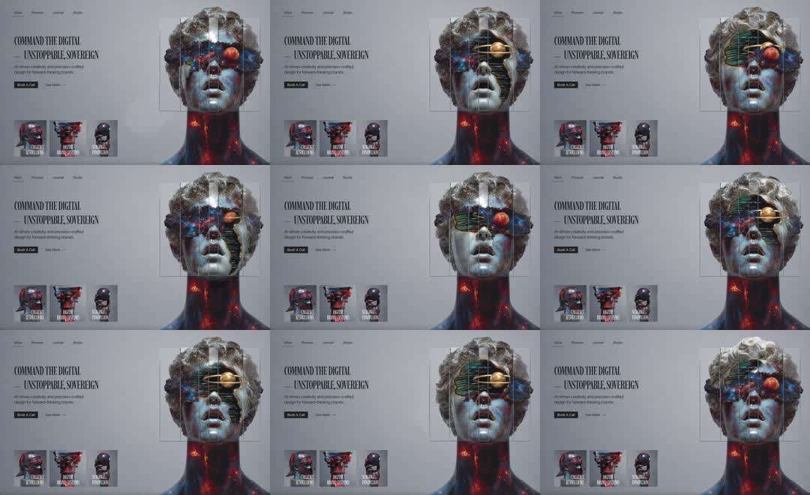

Brutalist hero section: split layout - left 'COMMAND THE DIGITAL / UNSTOPPABLE, SOVEREIGN' headline with Book-a-Call CTA and 3 helmet-render thumbnails; right a classical marble bust wearing a futuristic HUD visor. The visor FX loop: glitch RGB splits, scanline bands, a targeting reticle over one eye, and an orbiting gold ring, cycling through visor states.
Media
Frame-by-frame

0-25%
Bust with dark visor band, red orbital accent near the eye; faint HUD brackets frame the head; thumbnails static.
25-50%
Visor glitches: horizontal slice offsets + RGB channel split; a gold elliptical ring orbits across the eye line; scanline texture sweeps down.
50-75%
Reticle state: crosshair brackets + gold ring lock over the right eye, red dot centered; brief hold, then glitch again.
75-100%
FX settle back to dark visor; neck/shoulders keep a slow red ember glow pulse; loop.
Build prompt
Rebuild this interaction 1:1: a brutalist hero section - split layout: left, a giant "COMMAND THE DIGITAL / UNSTOPPABLE, SOVEREIGN" headline with a Book-a-Call CTA and 3 helmet-render thumbnails; right, a classical marble bust wearing a futuristic HUD visor. The visor FX loop: glitch RGB splits, scanline bands, a targeting reticle over one eye, and an orbiting gold ring.
## Integration
Integration: stack-agnostic spec - springs given as stiffness/damping, timed motions as duration + curve, canvas/shader notes are perf guidance only; map every value to your framework and animation library of choice.
## Scene
Left: giant black condensed headline, CTA button, 3 small helmet renders. Right: marble bust with a dark visor band; faint HUD brackets frame the head; red orbital accent near the eye; slow red ember glow at the neck/shoulders.
## Motion spec
Pattern: ambient FX loop (~6s cycle).
- Glitch bursts: horizontal slice offsets + RGB channel split, 150ms each, 2-3 bursts in a row, steps() timing.
- Scanline band: sweeps down the visor (translateY, 500ms linear).
- Reticle state: crosshair brackets + gold ring lock over the right eye with a red dot center - brackets scale in (200ms ease-out), hold 800ms.
- Orbit: gold elliptical ring rotates across the eye line (2s linear).
- Ember glow at the neck pulses slowly and continuously.
- Headline, CTA, thumbnails: perfectly still.
## Calibration
- Glitch is steps() and violent but brief (150ms bursts); the calm states between glitches are what make them land.
- Reticle lock 800ms hold - long enough to read "target acquired".
- All FX confined to the visor zone; the marble itself never distorts.
## Reduced motion
Static visor with the dark band and red accent; no glitch, no scanlines, no reticle.
## Don't miss
- The composition tension is classical marble + HUD chrome - keep the bust photographic and the FX graphic.
- Gold ring and red dot are the only saturated accents; everything else is monochrome.
- Thumbnails stay static; motion belongs to the hero bust only.
Mechanics
trigger
autoplay ambient loop
elements
headline block, bust image with layered FX (scanlines, glitch slices, reticle, orbit ring), thumbnail row
properties
glitch slice translateX + RGB split, scanline band translateY, reticle bracket scale-in, orbit ring rotation
timing
full FX cycle ~6s: glitch bursts 150ms x2-3, reticle hold 800ms, orbit 2s